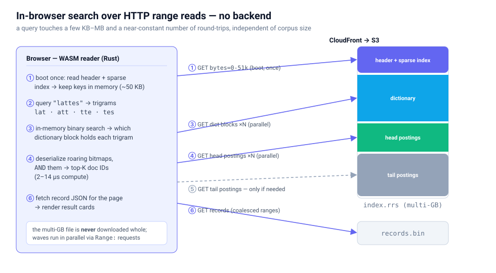
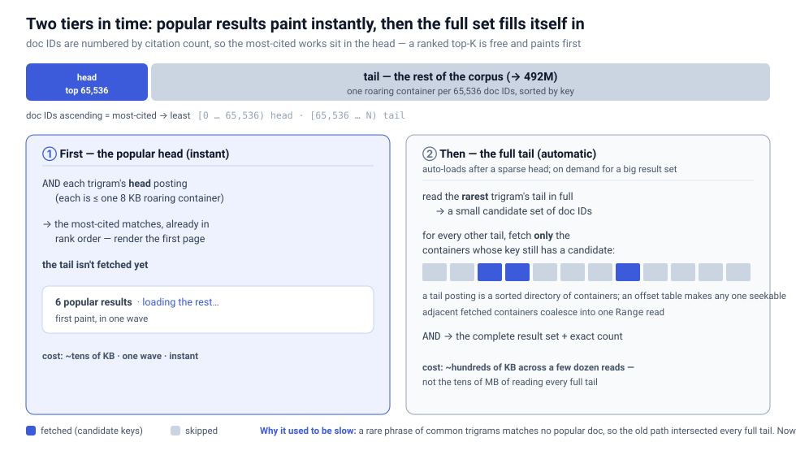
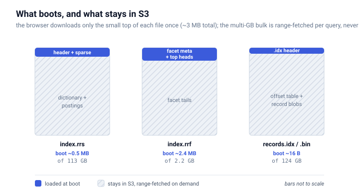
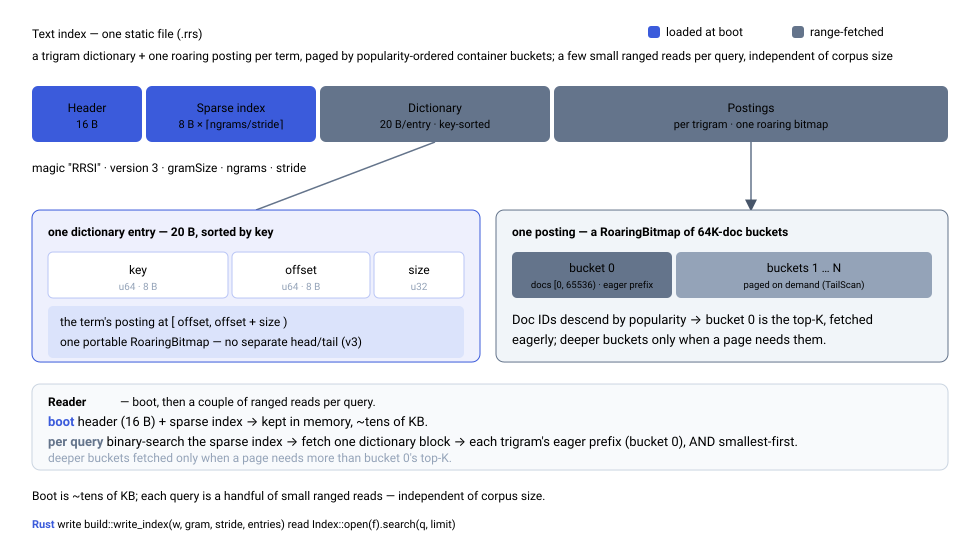
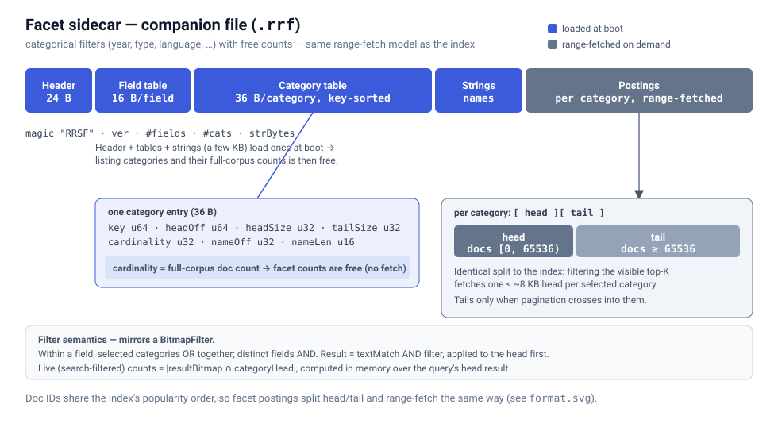
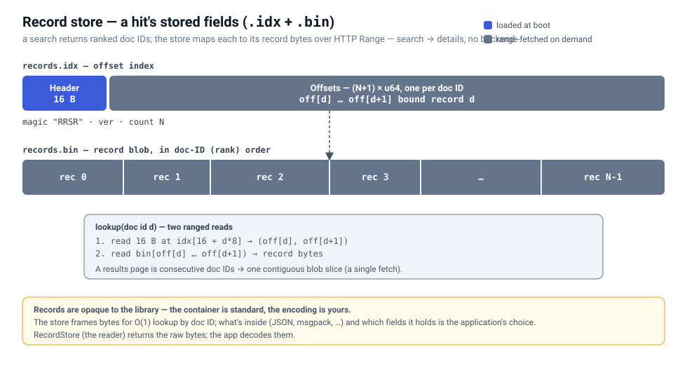
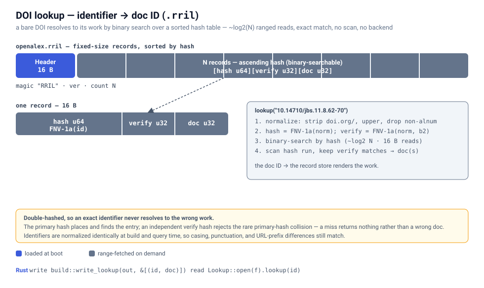

This demo searches ~47.8M OpenAlex works entirely in your browser, with
no backend. The index is one static file on S3, and a query fetches just a
few small byte-ranges over HTTP — never the whole file. It's powered by the
roaringrange library.
The OpenAlex data, mapped
Each OpenAlex Work
— a paper, book chapter, dataset, preprint, and so on — becomes one ranked document.
Documents are numbered by cited_by_count (most-cited first), which is what
lets the popular "head" paint instantly.
What's indexed
The searchable text is each work's title, its abstract (reconstructed from
OpenAlex's abstract_inverted_index), its author names, and its
host venue — concatenated and cut into trigrams. A query therefore matches across
any of them: a phrase from the abstract, an author, or a journal, not just the title.
The five facets
Five fields from each work become filter categories (the .rrf sidecar):
- Year —
publication_year. - Type — the work's
type: article, book-chapter, dataset, preprint, … - Open access —
open_access.oa_status: gold, green, hybrid, bronze, or closed. - Language — the work's
language, shown as a full name. - Topic — its
primary_topic(falling back to the first concept).
Within a field, categories OR together; across fields they AND — all from doc-ID bitmaps, no backend.
What a result stores
The record behind each result keeps just enough to render a card and link out:
- id — the OpenAlex work ID, linking back to openalex.org.
- title · authors · year · host venue · citation count.
- abstract — reconstructed and clipped to a preview, when the work has one.
DOI lookup
A small companion index (.rril) maps each work's DOI straight to its
document, so pasting a DOI — or a doi.org URL — jumps to the exact work in a
couple of byte-range reads instead of a text search.
Searching in the browser



File formats
Text index (RRS)

Facets (RRSF) — filtering without a backend

.rrf file maps each category (year, type, language, …) to
a doc-ID bitmap. The header, tables, and names load once, so listing categories and
their full-corpus counts is free; selecting one fetches a single small "head"
posting. Within a field categories OR together; across fields they AND.
Record store (RRSR)

.idx) maps a doc ID to a byte range in the
record blob (.bin) — two ranged reads, and a results page of consecutive
IDs is one contiguous slice. Records are opaque bytes (here, compact JSON), so the
format never dictates your data model.
DOI lookup (RRIL)

.rril file maps each work's identifier (its DOI, normalized)
to a doc ID: a header, then fixed-size records sorted by hash. A lookup normalizes the
query and binary-searches the hashes — a handful of 16-byte ranged reads — and a second
"verify" hash rejects collisions, so an exact DOI lands on the exact work (or nothing)
with no text search.